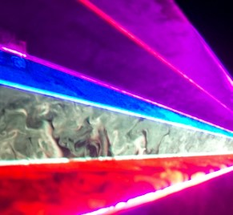
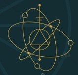
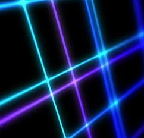
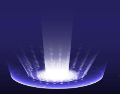
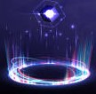
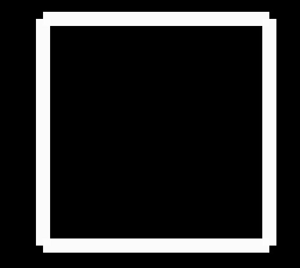
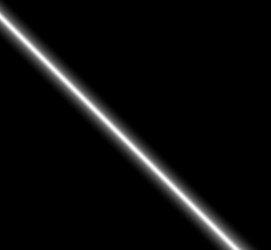
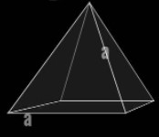

Paradoxes manipulated into existence through divine vision
Tier 1: Creation within chaosThe sacred shapes form within the battlefield, but a master Welder is able to seize the moment ripping it from the continuity of a whole. Thusly they create a non-essence, which distorts the divine symmetry into another, changing the very existence around it. |
|
 Weld SymmetryAs an action, you can weld a shape on the battlefield. Pick up to (2+the tier of this frature) targets, forcing them to make a Strength save, against your spell save DC. On fail the targets speed is reduced to 0.They can repeat the save at the end of their turn. You can dismiss the effect on the target with a free action/free reaction. |
 Shapes of the realityDepending on the shape created with the “Weld Symmetry” ability, the afflicted receive a boon or a bane. The effect persist until the symmetry is broken. |
Tier 2: Existence within the symmetryWe are all blessed to live in the sacred symmetry. |
|
 Perfected symmetryIf the shape of the Welded symmetry is perfect, you will get a backlash, energizing you with vigor depending on the amount of target Welded within. (F.e. Triangle with equal sides)If the symmetry is perfect, you gain amount of spell slot levels equal to twice the number of the targets welded. Per each target welded you gain max HP equal to your level, and the boon of that symmetry until the next long rest. |
|
Tier 3: Insights of the creatorChapter 4 Response to Dar’Karpatals proposal on mortality Infinitely complex creation, while flawed is rife for exploration. Its complexities stemmed from uncertainty of own existence, like a religion of the cycle, with which we are personally acquainted, and thus not mystified by it. Posits Dar’Karpatal in his treatise on the nature of mortality.My proposition however, is as follows. Their existence itself is purposed to uncertainty, like the building blocks of nature and magic are impurified by the creation to have a core of unpredictable instability. As posited by my Creator, Elder Oh’rom – “These creatures, while inferior are in their essence opposite to my siblings and my creations. My attempts at fabricating their freedom was only half successful. Freedom can be algorithmic and even covered in the mind of the creation, but it will always stay ultimately predictable. Mortals however while not lacking predictability according to my current research absolutely lack algorithmicity of existence.” Excerpt from “Nature of mortality, and its place in the purpose” by Fa’Adal. |
|
Servant of the forefatherYou gain a primitive companion artificer that obeys your every command.All stats of this creature are at 10 except strength which is 4, its size is tiny, and it cannot attack. It is immune to charms, dominations and sleep. Servants HP is equal to twice your level, cannot drop below 0 and it cannot die. As a bonus action you can restore its health to max. After a long rest, you can mold its form to your liking. |
|
Tier 4: Adaptation within the purposeQuestion usually arises during my sermons – “How much do we need to act within the purpose? Could we not lose the path for a fake one? And I always answer, that the purpose guides you from within, granting you divine insights towards the right path. And sometimes you might think that you are forcing destiny, meanwhile it is just according to your purpose.” One of Fa’Adal’s sermons before shaping a new ring in the kingdom of the chosen. |
|
 Destiny Forced(Bonus action)Teleport any number of visible creatures within 60 feet from you into any location within 60 feet from you. The creatures can resist this ability, and the saving throw to it is equal to (your spell save DC +10 – number of targets of this spell) Charisma save. After one usage, you cant use this feature again until the next long rest |
 Minor adjustment to the purpose(Bonus action)Teleport a willing target, that you can see, 10 feet in any direction. |
Tier 5: The Simplicities and the complexitiesAmidst the tomes in the secret depths of the library of the sightless you were shown to a dusty tome with the title «Treatise on Symmetry in death» by De'Trel the Demure. Written in an artificer language, it tells you of a wandering scholar that was looking for «residue of a recent experiment». He postulates that the direction of death, the whole way it works is similar to the patterns of «rudimentary brethren». In the addendum you find techniques so ancient, as to be lost even to your comrades in the kingdom of the chosen |
TriangleBoonCreatures within the triangle gain extra max and current health, equal to three times your character level. Bane Creatures within the triangle take force damage equal to your level at the start of their turn. |
 SquareBoonThe targets gain resistance to a chosen damage type. Bane The targets gain vulnerability to a chosen damage type. |
 LineYou can weld any number of targets into a line.While welded all the effects of single targeted spells and abilities are mirrored on all the welded targets. There is no perfect welding for the line, and it starts from 3 targets. |
 Pyramid (any angled base)BoonThe affected creatures share all the damage they receive. Bane Damage received by one member of the pyramid is replicated on all others. Creatures affected by the pyramid eminate a bright light of a chosen color. Perfect pyramid If the pyramid is perfect (meaning its base is perfectly symmetrical, and its top is right above the center of the figure below), until at least 2 of its components (aside from you) are within the structure and are above 0 HP, you are immune to damage, but are unable to move. This boon can be dismissed as a bonus action |